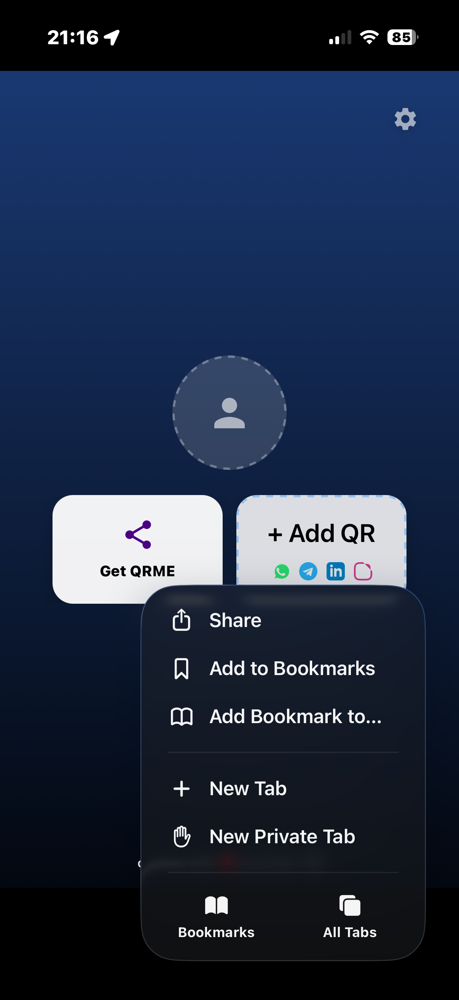
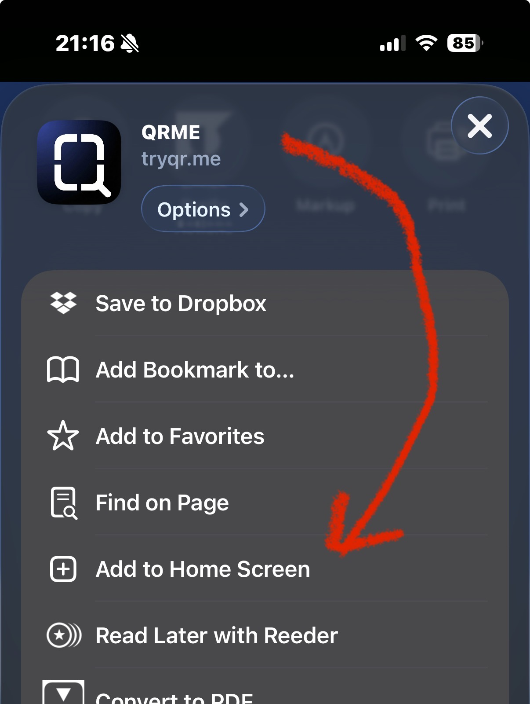

Add QRME to your
iPhone Home Screen
Install tryqr.me as an app in seconds! ✍️
1
Tap the Share Button
Open Safari, visit tryqr.me, and tap the icon at the bottom.

⤷
2
Select Add to Home Screen
Scroll down the list until you see the + icon. Tap it!

⤶
3
Hit "Add"
The QRME icon will appear. Simply tap Add at the top right.
